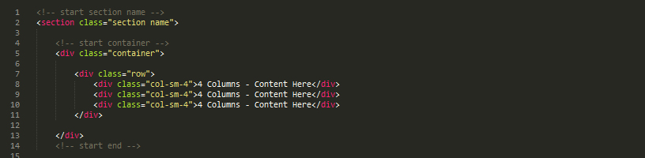
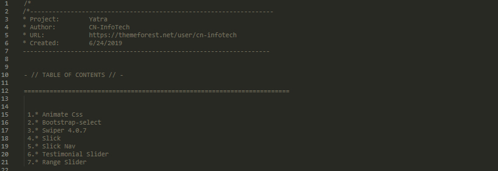
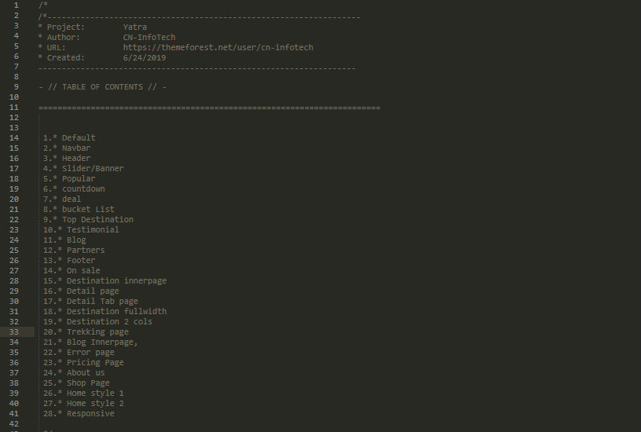
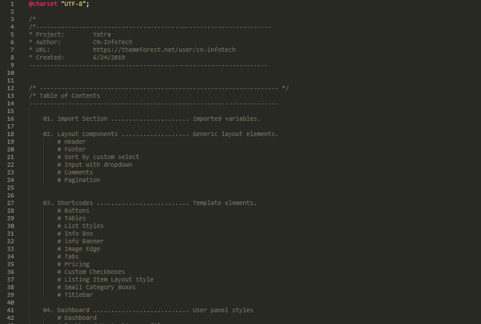
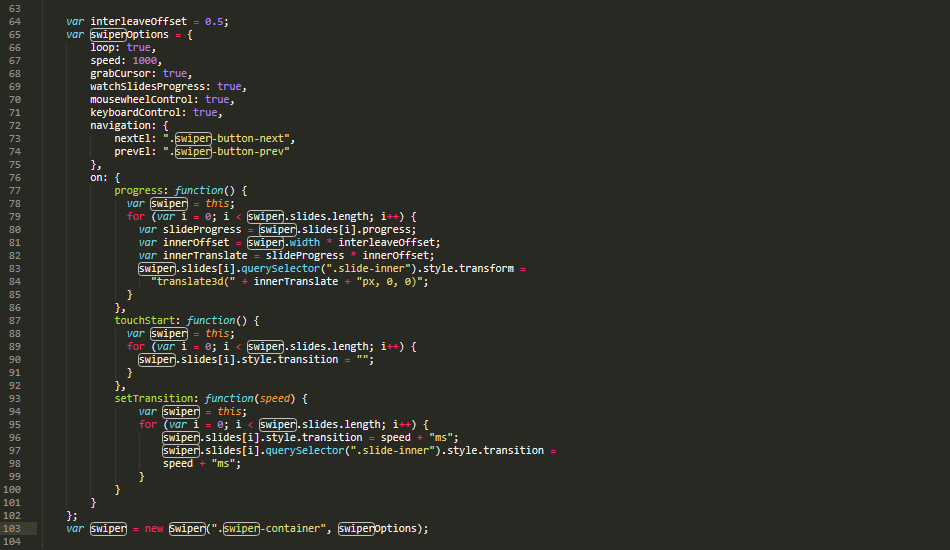
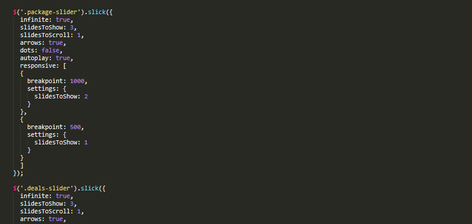

Yatra
Travel Agency HTML Template
- Created: 6/24/2019
- Updated: 05/11/2021
- By:CN InfoTech
- Email: cyclone.themes@gmail.com
Yatra is the most enticing, creative, and modern Travel Agency Premium HTML5 template suitable for any Travel or travel agency websites.Easy to use & customize, design & code quality, responsive theme, creative sliders, flexibility, tons of premade pages, shortcodes, Multiple portfolio options, Multiple blog options responsive and quick support – these are the outstanding features and quality to make us stand out from the crowd.
This template has smooth animation, clean features, modern and unique design which make your website more beautiful. This template was built in HTML5 and CSS3, with parallax image effects and CSS animations to make it even more appealing and dynamic.
Super Features
- 7 Different Hompage
- 7 Dashboard Pages
- 6 Shop pages
- 4 Hotel pages
- 6 Flights pages
- 4 Cars Rent pages
- 4 Cruise pages
- 22 other inner pages
- Fully Responsive Design
- Multi Page
- Retina ready
- Neat and clean design
- Clean Code
- Browser Compatibility
- Fontawesome
- Google webfonts
- Extensive Documentation
- All files are well commented
Files and folders structure
Whole template is divided in to several folders and their content defines by the folder names easily.
Yatra - Travel Agency HTML Template
- Images(all images and backgrounds patterns)
- css
- style.css(main stylesheet)
- icons.css(for fontawesome icon intregrate)
- dashboard.css(for dashboard section)
- bootstrap.min.css(Twitter bootstrap v3.3.7 css)
- plugin.css(related css of used plugin)
- js
- bootstrap.js(Twitter Bootstrap v3.3.7 js file)
- jquery-3.2.1.min.js(latest jquery library)
- main.js(Custom js codes for plugins)
- slick.min.js(use for slick related plugin)
- chart.js(use in dashboard page)
- countdown.js(countdown for time)
- dashboard-custom.js(custom js code for dashboard)
- plugin.js(js of different plugins)
- main-1.js(js use for isoptope)
- map.js(for map integration)
- jquery-modal-video.min.js(use to video mdal popup)
- rangeslider.js(use to max and min price)
- preloader(use for loader content)
- Twitter Bootstrap v3.3.7
- All neccessary item for bootstrap
- Fonts
- 'Josefin Sans', sans-serif
- 'Poppins', sans-serif
- Icons
- Fontawesome
- Flaticon
HTML Structure
Yatra is based on Bootstrap Grid that can help you rapidly develop sites that look beautiful at any size, be it a laptop screen or mobile devices.
The syntax is simple and it's effective cross browser, but the awesome part is that it also has the flexibility to go mobile like a champ. You can really easily customize all part of site or build new.
Step 1: Add HTML container

Step 2: Add row and columns (from one to twelve)
For More information, please visit http://getbootstrap.com/css/#grid
CSS Structure
Step 1: Plugin CSS Structure
Step 1: Style CSS Structure
Step 1: Dashboard CSS Structure
Swiper Slider
You don't need any special markup. Please follow like as below image.
For more informations, please visit http://www.idangero.us/swiper/
Slick Slider
You don't need any special markup. Please follow like as below image.
Icons font
Yatra - Travel Agency HTML Template used fontawesome, Flaticon font for its icons requirement and no images has been used for any icon. A complete list of icons along with the class names can be found here:
To use an icon on any page of the theme use the below code:
All fontawesome icons class name will always start with the fa- . There are several sizes for icons are predefined in the fonts.css inside css folder. i.e. fa-lg, fa-2x, fa-3x where as flaticon start with flaticon-
Images sources
All Images are taken from Pexels. All photos published on Unsplash are licensed under Creative Commons Zero which means you can copy, modify, distribute and use the photos for free, including commercial purposes, without asking permission from or providing attribution to the photographer or Unsplash.
Source Credits
Once again, thank you so much for purchasing this template. As I said at the beginning, I'd be glad to help you if you have any questions relating to this template. No guarantees, but I'll do my best to assist.
If you have a more general question relating to the template on ThemeForest, basic HTML/CSS/JavaScript related questions, you might consider visiting the forums and asking your question in the "Item Discussion" section.
Best Regards,
CN-InfoTech